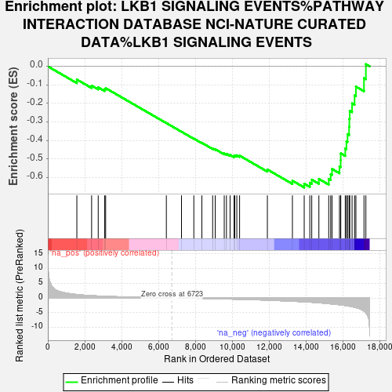
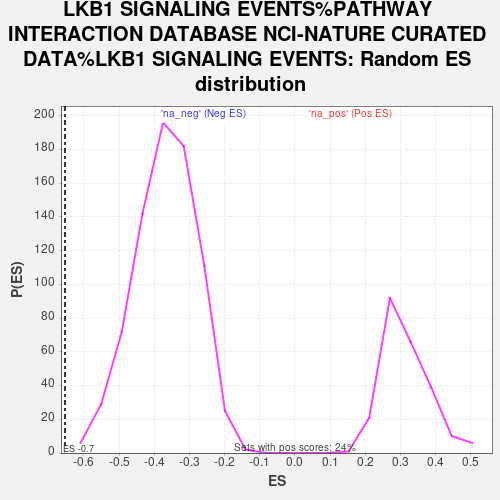

| Dataset | gene_ranks |
| Phenotype | NoPhenotypeAvailable |
| Upregulated in class | na_neg |
| GeneSet | LKB1 SIGNALING EVENTS%PATHWAY INTERACTION DATABASE NCI-NATURE CURATED DATA%LKB1 SIGNALING EVENTS |
| Enrichment Score (ES) | -0.6540595 |
| Normalized Enrichment Score (NES) | -1.7794163 |
| Nominal p-value | 0.0 |
| FDR q-value | 0.5813258 |
| FWER p-Value | 0.662 |

| SYMBOL | RANK IN GENE LIST | RANK METRIC SCORE | RUNNING ES | CORE ENRICHMENT | |
|---|---|---|---|---|---|
| 1 | SMARCD3 | 1575 | 1.202 | -0.0711 | No |
| 2 | MARK4 | 2376 | 0.812 | -0.1040 | No |
| 3 | STRADA | 2734 | 0.691 | -0.1134 | No |
| 4 | CREB1 | 3081 | 0.597 | -0.1237 | No |
| 5 | ETV4 | 3138 | 0.582 | -0.1176 | No |
| 6 | SMAD4 | 6431 | 0.030 | -0.3061 | No |
| 7 | EZR | 7253 | -0.012 | -0.3530 | No |
| 8 | GSK3B | 7922 | -0.082 | -0.3901 | No |
| 9 | STRADB | 8358 | -0.135 | -0.4129 | No |
| 10 | YWHAB | 8943 | -0.208 | -0.4431 | No |
| 11 | YWHAQ | 9083 | -0.228 | -0.4474 | No |
| 12 | CAB39 | 9572 | -0.298 | -0.4706 | No |
| 13 | CRTC2 | 9692 | -0.315 | -0.4724 | No |
| 14 | STK26 | 9889 | -0.343 | -0.4782 | No |
| 15 | SIK1 | 10105 | -0.377 | -0.4845 | No |
| 16 | HSP90AA1 | 10146 | -0.384 | -0.4806 | No |
| 17 | YWHAZ | 10254 | -0.403 | -0.4803 | No |
| 18 | PRKACA | 10405 | -0.430 | -0.4820 | No |
| 19 | TSC1 | 11912 | -0.719 | -0.5569 | No |
| 20 | YWHAE | 13271 | -1.090 | -0.6174 | No |
| 21 | YWHAG | 13911 | -1.278 | -0.6336 | Yes |
| 22 | STK11IP | 14215 | -1.389 | -0.6287 | Yes |
| 23 | SIK2 | 14320 | -1.428 | -0.6117 | Yes |
| 24 | AKT1S1 | 14707 | -1.616 | -0.6080 | Yes |
| 25 | PSEN2 | 15241 | -1.909 | -0.6080 | Yes |
| 26 | MLST8 | 15346 | -1.978 | -0.5822 | Yes |
| 27 | SIK3 | 15420 | -2.019 | -0.5540 | Yes |
| 28 | MARK2 | 15824 | -2.284 | -0.5405 | Yes |
| 29 | TP53 | 15890 | -2.328 | -0.5069 | Yes |
| 30 | YWHAH | 15893 | -2.330 | -0.4697 | Yes |
| 31 | STK11 | 16138 | -2.543 | -0.4429 | Yes |
| 32 | MTOR | 16202 | -2.593 | -0.4049 | Yes |
| 33 | RPTOR | 16262 | -2.643 | -0.3660 | Yes |
| 34 | BRSK1 | 16346 | -2.734 | -0.3269 | Yes |
| 35 | CTSD | 16361 | -2.755 | -0.2835 | Yes |
| 36 | BRSK2 | 16381 | -2.780 | -0.2400 | Yes |
| 37 | MAPT | 16508 | -2.951 | -0.1999 | Yes |
| 38 | CDC37 | 16644 | -3.137 | -0.1574 | Yes |
| 39 | TSC2 | 16716 | -3.255 | -0.1092 | Yes |
| 40 | MAP2 | 17154 | -4.408 | -0.0636 | Yes |
| 41 | MYC | 17257 | -5.064 | 0.0117 | Yes |
